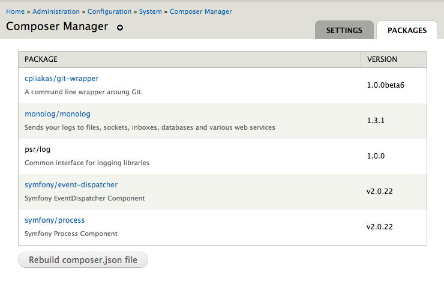

Composer
There's a Module (or Library) for that!

Presented by Rob Loach and Larry Garfield
Dependency management sucks
PHP sucks at sharing
- How do I get a 3rd party library?
- How do I load its code?
- Does it depend on anything?
- Where do I put the files?
Sharing is how Open Source works
Sucking at sharing is how
Open Source dies
But we're Drupal!
- Drupal.org: Great for modules, nothing else
- Duplicate work elsewhere
- Code is not reusable
3rd party code
- Manually download into your module and pray
- Manually download into /libraries/ and pray
- Manually setup extra hook
(... and pray)
"Do it manually and pray"
is for losers
We're better than that, right?
A little history
PEAR

- PHP Extension and Application Repository
- Founded 2000 on the "new" PHP 4
- Required root to use properly (WTF?)
- Complex process for adding packages
- Easy to get wrong
Symfony 2.0
- Initial alpha, Symfony Live Paris, February 2010
- PHPBB: We're rebuilding on it!
- Symfony2 uses 3rd party libs (Doctrine, Monolog)
Dependency Hell

We need a dependency system!
It's dumb to make it Symfony specific
—Jordi Boggiano
April 2011
Nils Aderman (PHPBB): libzypp -> PHP
Jordi Boggiano (Monolog): Packagist, less sucky front-end for PEAR
With their powers combined...
Composer is a tool for dependency management in PHP. It allows you to declare the dependent libraries your project needs and it will install them in your project for you.
Uhh, what?
- No more Copy/Paste of libraries
- Resolves dependencies
- Each project defines its own requirements
- Performs build tasks
- Like module
.infofiles, but for any library
September 2011
I'd say until early 2012 it was pretty unusable, yet people used it. I guess that's how badly it was needed.
— Jordi Boggiano
Package count

April 2013: 10,000 packages
(Not just Symfony!)
Libraries
Some of the libraries available via Composer include...
Symfony
PHP framework for web applications
Zend Framework

PHP framework for web applications
 PHPUnit
PHPUnit
Unit testing software framework for PHP

Guzzle
HTTP client & framework for building RESTful web service clients
Solarium
Solr client library for PHP
Elastica
Elasticsearch search engine/database for PHP
Monolog
Log to files, sockets, inboxes, databases and various web services
Let's Do This
composer.json
Base manifest file for your project
{
"name": "crell/mypackage",
"description": "This package provides some awesomeness.",
"require": {
"guzzle/guzzle": "3.4.*"
},
"autoload": {
"psr-0": {
"MyName\\MyPackage": "src/"
}
}
}composer install
Installs all dependencies for your project
$ curl -sS https://getcomposer.org/installer | php
All settings correct for using Composer
Downloading...
Composer successfully installed to: composer.phar
Use it: php composer.phar
$ php composer.phar install
File system
-rw-rw-r-- composer.json (your composer file)
-rw-rw-r-- composer.lock (generated)
drwxrwxr-x src/ (your code)
drwxrwxr-x vendor/ (everyone else's code)
index.php
require_once __DIR__ . '/vendor/autoload.php';
// Every class is now yours to command!
// Autoload on demand! Your work: zero.
$client = new Guzzle\Http\Client('https://api.github.com');
$request = $client->get('/user')->setAuth('user', 'pass');
$response = $request->send();
echo $response->getBody();
composer update
Updates all installed dependencies to the latest version
$ php composer.phar update
Loading composer repositories with package information
Updating dependencies
More Schema Options
{
"license": "MIT",
"require": {
"php": ">=5.3.10",
"guzzle/guzzle": "3.4.*"
},
"require-dev": {
"phpunit/phpunit": "3.7.*"
},
"suggest": {
"monolog/monolog": "Advanced logging package"
}
}Composer for Drupal
Drush Composer
Allows running Composer commands through Drush
$ drush dl composer-8.x
$ drush composer
Composer Autoload
Automatically loads any generated Composer files
Jimmy Berry - drupal.org/project/composer_autoloadComposer Manager
Builds Composer files from module composer.json files

Chris Pliakas - drupal.org/project/composer_managerDrush Composer Manager
Downloads and installs dependencies for Drupal modules
$ drush dl composer_manager monolog
$ drush en composer_manager monolog
$ drush composer-manager
Loading composer repositories with package information
Installing dependencies
- Installing psr/log (1.0.0)
Downloading: 100%
- Installing monolog/monolog (1.5.0)
Downloading: 100%
Composer Installers
Facilitates installation of Drupal modules/themes/profiles

Composer Installers
Add a composer.json file in your module/theme directory
{
"name": "dries/mymodule",
"type": "drupal-module",
"require": {
"composer/installers": "*"
}
}Adding these to each module is cumbersome though, so there is...
Drupal Packagist
Indexes Drupal themes/modules/profiles for installation
{
"repositories": [
{
"type": "composer",
"url": "http://drugist.espend.de"
}
],
"require": {
"drupal/views": "*"
}
}Haehnchen - github.com/haehnchen/drupal-packagist
Still very early
Sprint: Friday
Sprint with the community on Friday. Tasks for every skill set. Mentors are available for new contributors.
Optional Friday morning workshop will help you set up community tools.
Follow @drupalmentoringThank You
Now take off your pants
getcomposer.orgRate
Rate this session and stuff.